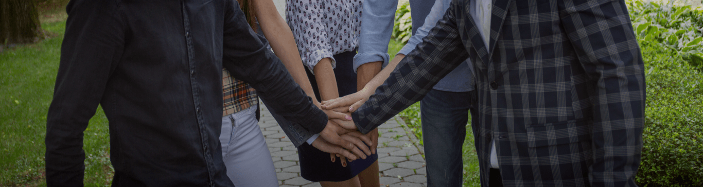
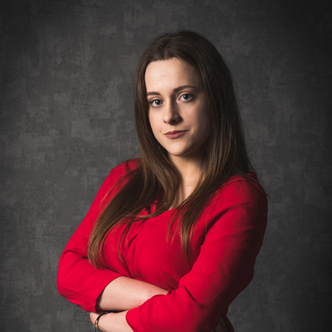
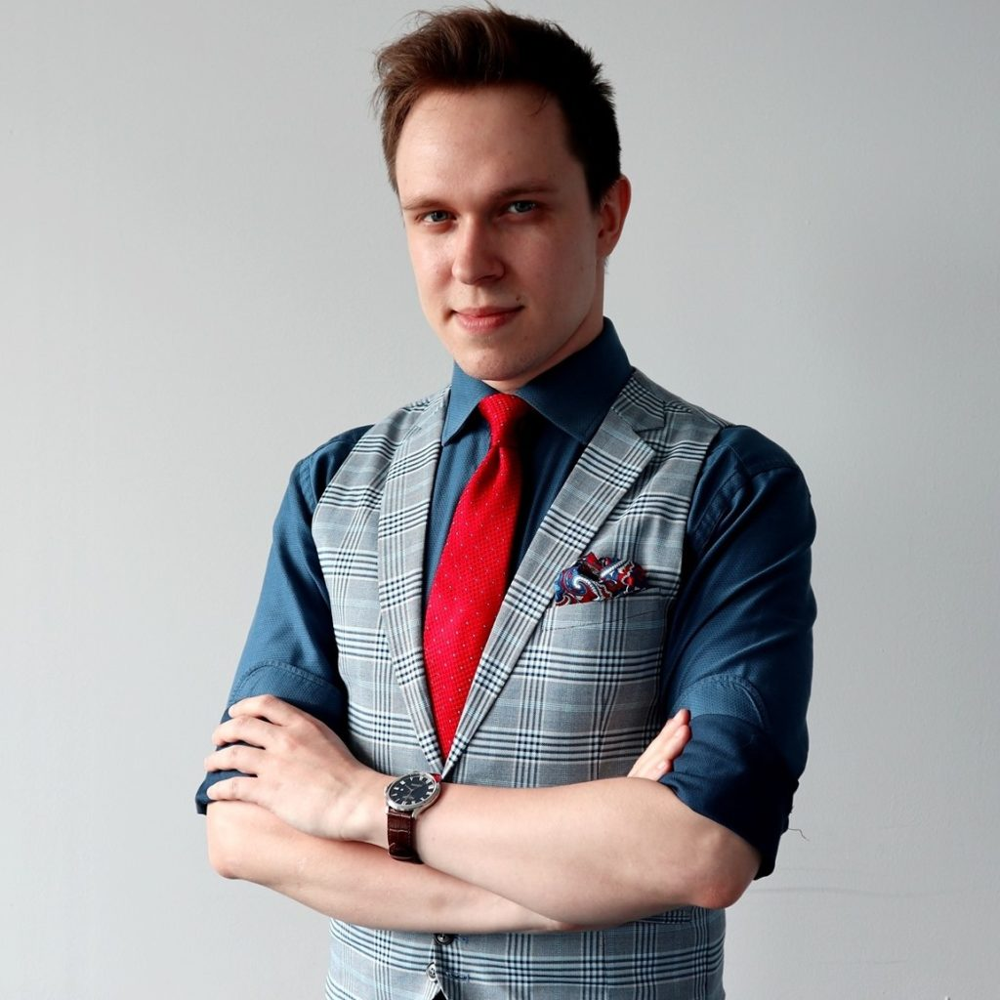

Misją Studenckiego Forum Business Centre Club jest kształtowanie postaw przedsiębiorczych wśród młodych Polaków.
Swoimi działaniami inspirujemy, edukujemy oraz motywujemy młodych ludzi, pokazując, że aktywność, odwaga i własna inicjatywa są drogą do osiągnięcia sukcesu.

Największą wartością Studenckiego Forum są ludzie. Jesteśmy aktywni, otwarci, pełni pasji i odważni. Nie boimy się podejmować wyzwań.
Tworzymy i realizujemy projekty, które często wydają się trudne, a nawet niewykonalne. Wychodzimy poza schematy myślowe funkcjonujące w otoczeniu.
Uczymy się i jesteśmy nastawieni na rozwój, ale również dzielimy się doświadczeniami. Wymagamy dużo od siebie i innych.
Studenckie Forum powstało z zaangażowania, pasji i chęci zmiany sytuacji przedsiębiorców w Polsce. Przyciąga ludzi ambitnych.
Pochodzący z Rzeszowa przedsiębiorca, wolontariusz i działacz społeczny. Prezes Fundacji Studenckie Forum Business Centre Club oraz Przewodniczący Zespołu Stałego ds. Młodzieżowych Rad w Polskiej Radzie Organizacji Młodzieżowych, a także były Przewodniczący Rady Młodzieży Rzeszowa. Student Akademii Leona Koźmińskiego w Warszawie.

Związana z Fundacją Studenckie Forum Business Centre Club od 2020 roku. Przewodnicząca regionu Rzeszów w latach 2021-2023. Absolwentka Politechniki Rzeszowskiej na kierunku finanse i rachunkowość, obecnie pracuje jako starsza księgowa w międzynarodowej korporacji.

Młody przedsiębiorca, student, aktywista, ekspert sprzedaży i zarządzania projektami. Od 2015 roku aktywnie zaangażowany w biznes i aktywizm na rzecz przedsiębiorczej młodzieży w Europie. Biznesowy założyciel Coder Score, platformy opartej na algorytmach AI oceniającej umiejętności specjalistów IT w procesie rekrutacji.
Student Ekonomii na Uniwersytecie Ekonomicznym we Wrocławiu. Od szkoły średniej związany z działaniami społecznymi i projektami. Współzałożyciel stowarzyszenia "Inny wymiar". Z zawodu project manager związany z branżą edukacyjną i szkoleniową.
SF BCC zmienia życie, zmienia patrzenie na świat. To zarówno przygoda, jak i wyrzeczenie, a jedno jest pewne: wyniesiesz z tej organizacji tyle, ile sam będziesz chciał. Oni wynieśli wystarczająco dużo, żeby skutecznie funkcjonować na rynku. Zobacz realne przykłady firm, do założenia których przyczyniła się nasza Fundacja.
Dołącz do jednego z 14 regionów SF BCC i zdobądź pierwsze doświadczenie w zarządzaniu projektami, pozyskiwaniu partnerów i pracy z mediami.